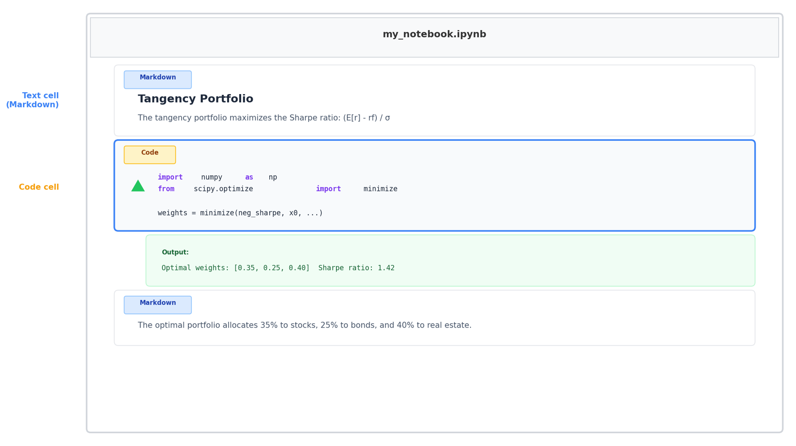

Rice Business 2026
The old way
The new way
This session is the research and teaching stack — Python, R, Stata, LaTeX, Quarto, Git, GitHub — and the single idea that one download can stand all of it up for you.
What it is
What comes bundled
This is the fix for the setup tax. Instead of a checklist of installs — editor, extensions, languages, LaTeX, Git — you download one program and let its Run Setup wizard put the rest in place.
What it is
Why it is the hub
Pick one home for your work. Academic Studio is that home — everything below happens inside it.

A Jupyter notebook interleaves code, output, and prose — ideal for analysis you want to narrate. Academic Studio runs them natively, and Claude can build, run, and explain each cell.
Python
R
.R scripts, and knows the tidyverse and common packagesYou do not have to choose a language on ideological grounds. Claude is fluent in both — work in what your field and your co-authors use.
Claude writes your do-files
.do fileesttab, reghdfe, and the usual toolkitThe workflow
Stata’s GUI is not the point of contact. The .do file is — and that is exactly the kind of text Claude writes, edits, and reruns well.
For papers that look right
Tables from results
The tedium of LaTeX — the debugging, the table formatting, the reference wrangling — is precisely what AI removes.
Write once
Plain-text .qmd files: prose, code, and math together
Render anywhere
The same source becomes a paper (PDF), a website, or slides
These slides
This deck is Quarto — rendered to reveal.js, exportable to PDF or PowerPoint
Quarto is the modern successor to R Markdown and works with Python, R, and Stata alike. Because it is plain text, Claude authors and restyles whole documents — as it did for every deck in this course.
The idea
With Claude, it is invisible
The reason you can let AI edit your project freely is that Git remembers every state — nothing is ever truly lost.
Your code in the cloud
GitHub Pages: free hosting
index.html, push, flip on Pagesgithub.io address — no server, no costFor solo research, GitHub is mainly backup plus a launch pad. For teaching, it is free hosting for anything you want students to reach.
The easy path
Or just ask Claude
One download, or one paragraph. Either way the setup tax is paid once, by the machine — not by you, by hand.
The environment is no longer something you assemble by hand and pray works. You describe the stack you want — languages, writing tools, version control — and Claude Code builds it, fixes it, and keeps it working. Your time goes to the research, not the setup.